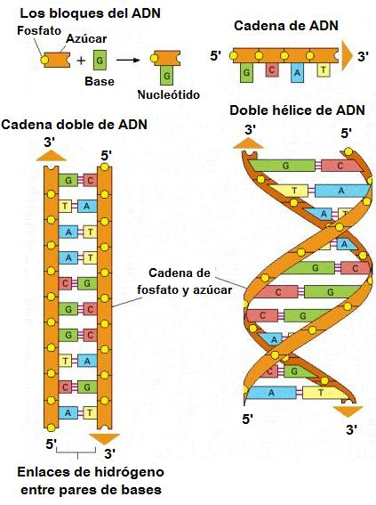
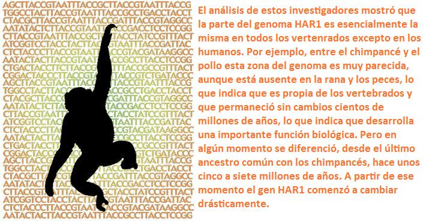
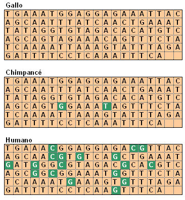

Originalmente publicado en el blog “¿Qué me estás contando?”
Desde que en 2001 se finalizó la secuenciación del genoma humano hemos ido de sorpresa en sorpresa, dado que muchos de los nuevos datos no han concordado con ciertas ideas que teníamos sobre nuestra dotación genética y las diferencias de ésta con otros seres vivos. Primero fue el pequeño número de genes que compone nuestro genoma (entre 25.000 y 30.000), que representa únicamente el doble de los que posee la mosca del vinagre Drosophila melanogaster y tan solo 2.000 a 5.000 más que Arabidopsis thaliana, la primera planta secuenciada y aproximadamente los mismos que el ratón común (Mus musculus).
Además, no es únicamente el reducido número de genes lo que nos asemeja más de lo que pensábamos a gusanos y ratones, sino que las diferencias entre nuestros genomas son muchísimo más pequeñas de lo que creíamos. Un organimso tan diferente como la levadura Saccharomyces cerevisiae comparte con nosotros el 50% de su genoma, y con la mosca del vinagre mencionada anteriormente, compartimos el 60% de nuestros genes.
Lógicamente, al comparar con parientes más próximos, las similutudes son impresionantes. El chimpancé, cuyo genoma se secuención completamente en 2005, puede compararse con el nuestro de forma literal en un 96% de su extensión, y de ella, el 99% de sus genes son idénticos a los nuestros. Dicho de otra forma, de los 3.000 millones de pares de bases de forman nuestros genes, 2.970 millones son idénticas en el chimpancé, y únicamente 30 millones de pares de bases han sufrido cambios desde que nuestros dos linajes se separaron, hace ahora unos 6 millones de años. Estamos hablando de que chimpancés y humanos únicamente se diferencian en unos 200 – 300 genes.
Estos descubrimientos han llevado a replantearnos la forma en la que los genes producen la variedad específica. Tradicionalmente se pensaba que la consecuencia de un único cambio en una base nitrogenada era muy pequeño, y que solo la acumulación de gran número de estos cambios podía originar macroespeciación. Sin embargo, estos resultados contradicen esta visión extremadamente gradualista. Las extensas diferencias entre especies no se deben tanto al número de genes que difieren entre ellas como a la acción de unos pocos genes que organizan el desarrollo del individuo.
Cambiando a diferente velocidad
No todas las regiones genómicas reflejan la misma velocidad en los cambios de bases nitrogenadas. Si las mutaciones no son ni beneficiosas ni dañinas, se acumulan a una tasa uniforme que sirve para calcular el tiempo de divergencia entre dos especies. Por el contrario, si una región cambia de forma más rápida, es síntoma de que ha sido seleccionada de forma positiva, dado que la acción beneficiosa de la mutación aporta mayor probabilidad de ser transmitida a la siguiente generación.
Trabajando con estas zonas “aceleradas” del genoma, K.S. Pollard, de la Universidad de California en San Francisco, ha encontrado una región de 118 bases a la que ha denominado “región acelerada humana1? (HAR1), comprobando que forma parte de un gen implicado en el desarrollo del cerebro.
Comparando la región HAR1 de varias especies de vertebrados, se ha comprobado que había evolucionado muy lentamente antes de la separación del Homo sapiens. De hecho, entre el gallo y el chimpnacé, solamente difieren dos de las 118 bases, mientras que entre humanos y chimpancés se encuentran 18 diferencias en un tiempo mucho menor (los linajes de los dos primeros divergieron hace unos 300 millones de años y el de los segundos hace tan solo 6 millones de años).
Pocos cambios, mucho efecto
Posteriormente se ha descubierto que HAR1 interviene en el proceso de repliegue de la parte más externa de la corteza cerebral, por lo que desempeña un papel crucial en la caracterización del cerebro humano. En realidad, HAR1 forma parte de dos genes solapados, y aunque aún no sabemos como afecta exactamente al desarrollo de la corteza cerebral, se ha comprobado experimentalmente que HAR1 no codifica para ninguna proteína, sino exclusivamente para ARN.
Cambios entre chimpancés y gallos y entre humanos y chimpancés en la región HAR1 (Redibujado de Pollard, 2009)
HAR1 representa así un excelente y prometedor ejemplo de como unos pocos cambios moleculares pueden traducirse en unas diferencias cualitativamente considerables, especialmente interesantes al tratarse precisamente de la peculiar inteligencia humana. Otras secuencias aceleradas pueden estar implicadas en la formación de nuestra especie, como FOXP2 que facilita la formación de sonidos vocales, ASPM que controla el tamaño del cerebro o HAR2 que dirige la actividad génica de la muñeca y el pulgar durante el desarrollo.
Aún queda mucho por trabajar con HAR1 y otras secuencias aceleradas, pero cada vez más estamos llegando a la convicción de que no son necesarios muchos cambios en el genoma para que aparezca una nueva especie.
Referencias
Pollard, K.S. 2009. ¿Que nos hace humanos?. Investigación y Ciencia, 394: 24-29.
Volver a la sección Ciencias de los orígenes
Comentarios
Comments powered by Disqus